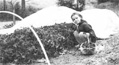
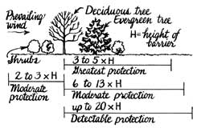
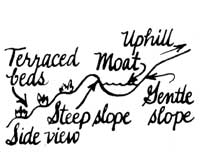
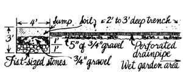
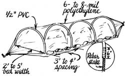
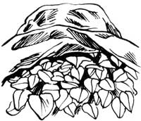
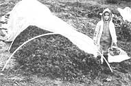

Protect your plants from the wind, rains, and frosts of early spring.
The urge to knead the soil with our hands and tools, to coax and nurse life from the earth, has been fueled by months spent scanning seed catalogs. We're spring's impatient gardeners anxious to get growing.
March winds won't hear of it. They dry out transplants like laundry on the clothesline. They chill and tear tender stems and roots.
Then April rains drown plants, cool and compact the ground, bruise seedlings, and wash out seedbeds.
And, in a final holding action, May frosts pass their cold judgment on early gardening hopes. In one still night, they fell seedlings that represent weeks of nurturing.
Spring gardening is back yard gambling: The sooner we act, the worse our chances. But while no gardener can eliminate bad weather, everyone can take steps, large and small, that will greatly reduce the misfortune that foul wind, rain, and cold bring.
Let's start with the biggest-and primary-decision: where you put your garden. Location is one of the most important factors affecting a plot's weather resistance. Buildings, slopes, bodies of water, and surrounding vegetation can alter weather patterns so much that you may have several different microclimates on your property-or even within your garden. It may actually be worthwhile to move an existing garden if doing so would dramatically decrease the energy you expend confronting the elements.
Consider slopes. Generally speaking, the crest of a hill is the windiest spot on it, and both water and cold air flow downhill and accumulate at the bottom. The hillside itself, then, is a better location than either the top or the bottom.
Of course, a southern slope is best. It gets more sun than most and is protected from cold north winds. A westerly exposure heats up later in the morning than a direct southern one, thawing frozen plants more slowly and reducing possible damage. It also reaches higher overall temperatures than an eastern exposure-which makes an east or southeast spot better suited to heat-sensitive plants in summer. Since northern slopes receive the least sunlight, many people use them to raise fruit trees; the postponed spring there retards early blooms that might get wiped out by a late frost.
Buildings create microclimates of their own. The south side of a home offers shelter from north winds, absorbs solar energy during the day, and slowly releases that warmth at night. So a permanent bed along the south wall is a great place for your earliest starts.
Lakes and ponds reflect heat and light to plants grown nearby, but they also allow an unobstructed pathway for winds.
Once you've picked the best site, consider building fences to provide protection from the wind-an idea so old that the very word garden comes from the Middle English gardin, or "enclosure." Remember: Wind increases cold damage (and dehydration in dry weather) as well as inflicting direct punishment. Reducing its effects is essential to early-season growing.
Use a fence with slats or an open weave-such as a picket, panel, woven wattle, or bamboo fence (even burlap stretched over chicken wire). It'll allow some airflow and provide better wind protection than a solid wall. (An unbroken barrier creates extra turbulence in its wake-see Fig. 1-while a somewhat permeable one slows wind speed without creating extra currents.) A density of 50°70 is ideal.
Shelterbelts consist of one or more rows of trees and shrubs arranged to offer wind protection, while tightly grown walls of shrubs alone are known as hedgerows. Both these "living curtains" (a literal translation of the Japanese term for hedgerows) offer erosion control, privacy, snowdrift protection, wildlife habitat, food, bee forage, and ornamental value, but their chief value is wind shelter.
A shelterbelt of trees should be perpendicular to the prevailing winds. In most areas, this would mean along the north and west borders. You may have different needs-for instance, you may want protection from hot southern summer winds. Whatever, be careful not to situate a windbreak below a sloping garden, or you'll trap a pocket of cold air that would normally move on by.
Two or three rows of trees should make an adequate-and still somewhat permeable-shelterbelt (Fig. 2). Evergreens are the most popular choices, since they provide year-round protection, but deciduous trees lose only 40°70 of their effectiveness when bare. Plant shrubs on the windward (upwind) side to protect young trees and to fill in the gaps below mature ones.
You might want to plant deciduous trees on the windward side of your evergreens. They generally mature faster and can be cut for lumber or firewood once the evergreens grow up. Windbreak trees should be planted fairly close together so the branches will just touch when mature to form a living canopy. Evergreens are commonly spaced from five to 15 feet apart, deciduous trees from five to 20 feet-but you can plant them more closely at first and thin them as they grow. (Your local soil conservation service or county extension agent should be able to give you specific species and spacing information for your area and soil type.)
Many shrubs provide beauty or food as well as shelter. Some good choices are Rosa rugosa (rose hips), high-bush cranberry, eastern sand cherry, lilac, Russian olive, autumn olive, filberts, holly, tree honeysuckle, forsythia, and rose of Sharon.
Once you've done all you can to gardin your garden, it's time to provide internal protection. If surface run-of from spring rains washes into your plot, dig a horseshoe-shaped or three-sided moat around the top and sides. Notice we said moat, not ditch. A narrow, steep ditch would deepen with time, washing much of its own soil away. A moat, on the other hand, is a wide trench with a gradual slope on its uphill (outer) side and a sharper one on the garden side (Fig. 3). When planted with a thick sod, this moat will resist its own erosion as well as protect your garden.
Raised beds incorporate elements of both landscaping and gardening and are favored by MOTHER'S staff.
Suppose your problem isn't surface runoff, but groundwater that turns part of your plot swampy during wet spells. In this case, you'll have to dig a trench, one foot wide and two to three feet deep, running from the morass to an area out below your plot. (If you have more than one wet spot, you can build a series of trenches that run into a main one like tributaries feeding into a river.) Put five inches of clean three-quarter-inch gravel in the trench. Lay a four-inch-diameter drainpipe (capped at its top) on this and cover with soil. The drainpipe can consist of either sections of unglazed clay tiles or corrugated black plastic pipe with precut drain slots.
If your trench-drained water doesn't flow into a natural waterway, you should build a sump: a four-foot by four-foot pit that's three feet deep (Fig. 4). Line its bottom with a one-foot layer of fist-sized stones or brick pieces. Then give it another foot of clean three-quarter-inch gravel, and cover the area with topsoil.
The basis of many ancient agricultural systems (and still in wide use today), terracing is the art of constructing strips of growing area that run horizontally along a slope, contoured to the natural curve of the :e land. Terraces make it possible to garden on a slope -even a very steep one-with little danger of erosion. The heat stored by the terrace wall above each strip can also provide some thermal protection for the crops below.
Permanent walls of stone (the best heat retainer), timber, or (if the slope is gradual enough) sod banks are all good for terraces. In all cases, never leave any of the garden soil bare and exposed to erosion. Replant or mulch an area as soon as it is harvested, grow cover crops in the off=seasons, and mulch between widely spaced plants.
As our listing of weatherproofing methods moves from large scale to small, it also moves from landscaping techniques to gardening methods. Raised beds incorporate elements of both. The long, three- to four-foot-wide mounds warm more quickly and drain better than flat garden soil. If you use the close plant spacing most often recommended for raised beds-planting on hexagonal centers rather than in straight rows-much less of your garden space will be wasted on erodible pathways. The plants themselves will also form a continuous canopy of leaves as they mature, and this "living mulch" will hold warmth close to the soil surface, help block wind erosion, and buffer rainfall.
You'll be better off if you prepare your early-spring growing beds the previous fall.
That way you won't have to wait for the soil to dry out when mud month rolls around, but can plant when you like. (We know this advice comes too late to help this spring, but next time around...)
It's easier to protect an entire bed than to shelter individual plants.
A thick layer of mulch-straw, leaves, wood chips, or other dead plant material laid on your garden-will definitely protect your plot from rain-caused erosion. But this insulating layer can also keep your soil from warming up quickly as well, so don't mulch heavily where you want to grow super-early spring crops. Still, a light mulch over a seedbed will cushion the scattering force of pounding raindrops, and a medium-depth mulch can prevent soil splatter on seedlings.
Cover cropping-growing plants to cover idle soil-sharply reduces wind and water damage. It also improves soil tilth, increases organic matter in your plot, and helps the soil retain nutrients. Hardy, fall-planted species such as hairy vetch, winter rye, and fava beans will help spring plots the most. Such cover crops can even help dry an early-season garden by drawing excess moisture out of the ground. (For more information, see "Green Manure Crops" by John Jeavons and Bill Bruneau, MOTHER No. 101.)
Once you've done all you can to make your entire plot less vulnerable to nature's attacks, you can turn your attention to protecting individual plants or beds. The portable aids we'll talk about here all buffer wind, cold, and rain well enough to make a significant difference in how well your crops weather bad weather.
The highly successful French market gardeners of the early twentieth century used bell-shaped glass jars called cloches (the French word for "bell") to protect their early crops. Nowadays, most people use plastic milk jugs for the job. Just cut off the containers' bottoms and put one over each plant you want to shelter. The miniature hothouses are free, durable, and-equally important-easy to ventilate on sunny days (just unscrew the cap). If you live in a windy area, be sure to tie them to stakes.
You can also buy or construct cone-shaped plant protectors made of plastic or fiberglass. One such product, the Wall 0' Water, has 18-inch-high, water-filled walls that absorb heat by day and release it at night. Old black tires can be used to shelter and warm seedlings-they work best with space-hungry vining crops like tomatoes and squash. And if you grow your tomato plants in welded wire cages, you can wrap those supports with clear polyethylene during the fickle-weather weeks. Anchor them well with stakes. You can also add fiberglass or scrap-wood "lids," but remember to remove them on warm days to avoid overheating.
Many times it's easier to protect an entire garden bed than to shelter individual plants. While you can make whole-bed cloches out of glass plates or old windowpanes, such structures are heavy and fragile. Portable garden tents are now available that use lightweight polyethylene or fiberglass sheeting. (Or build your own: Just make a framework out of wood or PVC, and cover it.)
You can also take a large piece of fiberglass sheeting, bend it into an inverted U, and secure its shape by placing wire crosspieces across the bottom. (Cover the ends with scrap fiberglass or plywood.)
All these bed protectors are wide enough to cover a garden bed, but they're not very long. Tunnel cloches made of six- or eight-mil polyethylene laid over a series of hoops (Fig. 5) can easily be made any length you'd ever need. Make the support frames from eight- or nine-gauge wire, PVC (set on rebar stakes), reinforced wire mesh, spring steel, and even smooth, supple branches. For the covering, use hardware store polyethylene -or special pre-slit poly for better ventilation. Weight the material carefully at the sides and ends with soil, rocks, or lumber, and be sure to open it up as often as necessary to prevent overheating and dampness-induced plant diseases.
Since plastic is not a good insulator, tunnel cloches offer only a few degrees of direct frost protection. (You might want to throw some blankets over your cloche on extremely chilly nights.) But they block wind chilling and dehydration and-most especially help warm the earth. This increases microorganism activity and nutrient availability, as well as helping plants get through cold spells. The cloches fend of invading birds and insects, too. And the poly can be replaced by a shading material in summer to cool heat sensitive crops.
There are other ways to warm spring soil, as well. You can lay black plastic on a bed and poke holes in it for individual transplants. (That mulch will eliminate a lot of weeding problems, too.) You can even try "polarization": covering a future bed with clear plastic for a few weeks. (Seal the edges tightly.) Tests have shown that this dramatically prewarms soil and even kills some young weeds, yet does not damage most beneficial soil microorganisms.
The newest space-age bed cover is spunbond polyester or polypropylene. (Reemay is a popular brand.) Light and rain easily penetrate this white, porous fabric. And it's so lightweight it can be laid loosely right on top of the plants it protects (the ends and sides weighted in place by soil) and then get pushed up by the crops as they grow (Fig. 6). Like plastic, the "floating bed cover" doesn't provide much direct frost protection. But the enhanced, sheltered environment it creates can extend either end of the gardening season by a few weeks.
Since the material breathes well, you don't need to ventilate the bed often. And spunbond covers make excellent insect barriers. (Want to be sure those flea beetles don't get on your eggplants?) Indeed, some gardeners use the materials solely for this purpose. On the negative side, you can't weed under a floating bed cover-you have to take it off. You also need to remove it when plants need wind- or insect-pollination.
The creative grower will experiment with all these garden-protecting tactics, or better yet, combine them. Cover a bed with both spunbond material and a poly tunnel cloche to get double frost protection. Lay black plastic as a mulch under your spunbond cover to eliminate that weeding problem. Put both black plastic and old tires out on your pumpkin patch and you can start long-season vines weeks earlier than normal. Build a tunnel cloche against a stone terraced bed, and trap the heat those rocks give off.
Change the Odds
You can't make your garden invulnerable to the assaults of spring storms, gales, and frosts, but you'll be pleased by how well the plot-protecting tactics we've mentioned do work. Let's put it this way: Springtime gardening will always be a gamble-who would really want it any other way?-but you don't have to just set out your plants and take your chances.
You can tilt the odds in your garden's favor.
Spunbond Row Cover
Gardeners Supply Co.
Johnny's Selected Seeds
Mellinger's
Natural Gardening Research Center
Pinetree Garden Seeds
Polyethylene
A.M. Leonard, Inc.
Mellinger's
Pre-slit Polyethylene
Gardeners Supply Co.
Johnny's Selected Seeds
Mellinger's
Industrial Grade Plastic (for portable growing frames)
Mellinger's
Windbreak Netting
Gardeners Supply Co.
Poly Tape (for use on garden plastics)
A.M. Leonard, Inc.
Bulk Burlap
Mellinger's
Wall O' Water
Henry Field and Co.
Gardeners Supply Co.
Peaceful Valley Farm Supply
Pinetree Garden Seeds
Hotcaps
Burpee Seed Co.
Farmer's Seed & Nursery
Harris Seeds
Mellinger's
Portable Cold Frames
Burpee Seed Co.
Gardeners Supply Co.
Geo. W. Park Seed Co., Inc.
Peaceful Valley Farm Supply
Burpee Seed Co.
300 Park Ave.
Warminster, PA 18974
215/674-4900, ext. 222
Farmer's Seed & Nursery
818 NW 4th St.
Faribault, MN 55021
507/334-1623
Henry Field and Co.
407 Sycamore St.
Shenandoah,IA 51602
712/246-2017
Gardeners Supply Co.
128 Intervale Rd.
Burlington, VT 05401
802/863-1700
Harris Seeds
3670 Buffalo Rd.
Rochester, NY 14624
716/594-9411
Johnny's Selected Seeds
Foss Hill Rd.,
Albion, ME 04910
207/437-9294
A.M. Leonard, Inc.
6665 Spiker Rd.
Piqua, OH 45356
800/762-8922 (in Ohio)
800/543-8955 (outside Ohio)
Mellinger's
2310 W. South Range
North Lima, OH 44452
216/549-9861
Natural Gardening Research Center
P.O. Box 149
Sunman, IN 47041
812/623-3800
Geo. W. Park Seed. Co., Inc.
Box 31
Greenwood, SC 29646
803/223-7333
Peaceful Valley Farm Supply
11173 Peaceful Valley Rd.
Nevada City, CA 95959
916/265-FARM
Pinetree Garden Seeds
New Gloucester, ME 04260
207/926-3400
|
Fig. 1 Solid barrier turbulence |
 Fig. 2 A Shelterbelt |
Fig. 3 A Garden moat |
|
 Fig. 4 A drainage trench and sump |
 Fig. 5 A PVC tunnel cloche |
 Fig. 6 A Spunbond bed cover |
|
 |
 |
 |